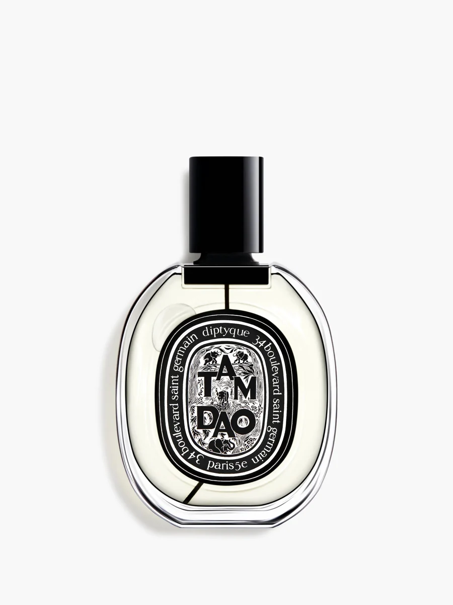

© Diptyque, official product imagery01 / 法国 / EST. 1961
Diptyque
蒂普提克 · 把旅行、植物与记忆装进椭圆瓶中
从巴黎艺术家开设的小店出发，Diptyque把绘画般的瓶标、旅行记忆与香气放在一起。Tam Dao以木质气息为入口，适合先认识它安静、富于画面感的一面。
品牌故事与时间线 ↗A FIRST ENCOUNTER
Tam Dao Eau de Parfum, 75 ml ↗
75 ml
Sandalwood / Cedar / Cypress
Tam Dao gives a woody fragrance wardrobe a particularly clear point of reference.
US$260 USD · before tax
Official U.S. product page · checked 27 October 2026
Photographs & design notes ↗